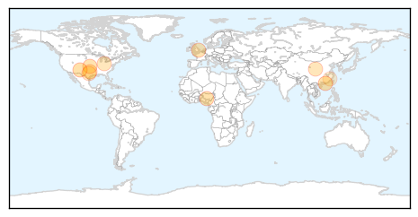

Influenza
30-Day Web Trend
1 alerts, 0 warnings
30-Day Twitter Trend
0 alerts, 0 warnings
Article Locations
Article Confidences
Top Articles:
- 0.999
- Flu cases double to 2,372 in El Paso, health officials say
- 0.998
- Flu Scan for Jan 28, 2015
- 0.969
- Expert allays fears on transmission of bird flu in humans
- 0.969
- How to help make sure the flu doesn't sideline your business
- 0.927
- Some Albany-area doctors question value of antivirals
- 0.905
- Cambridge, Ontario hospital battles ‘enteric outbreak’ on Mental Health Unit
- 0.810
- Canada has its first case of Avian flu
- 0.789
- New influenza cases down in Allegheny, Beaver counties
- 0.719
- NewsChannel 10 / Amarillo News, Weather, Sports
- 0.565
- Bird flu season becoming a serious concern for Chinese authorities
Top Tweets:
- 0.518
- RT: A more severe flu season can be expected in Europe. Our annual risk assessment on seasonal influenza is out: http://t.co/vN4…
Hepatitis
30-Day Web Trend
1 alerts, 0 warnings
30-Day Twitter Trend
0 alerts, 0 warnings

Article Locations
Article Confidences
Top Articles:
Top Tweets:
-
No tweets found for Jan 28, 2015